← 本轮 smoke 总览traex/DeepSeek-V4.1-Flash · 0872_s1
vision-agent · 256×144 · 16 FPS · 81 帧 · 状态 failed · 输出 tokens 48914
原始任务a brown bear in the water with a fish in its mouth
当前保存结果
此结果可播放，但该运行尚未通过最终提交审核。页面展示不代表评测通过。
已保存候选与代码修改
这里按时间展示外部捕获的候选，每份均可单独播放。保存新版本不等于完成视觉检查；下方工具证据记录实际看过的图。
候选 01 · 2026-11-08T20:38:22.461675+00:00 · 点开播放与检查图
inspection.png

transition_check.png
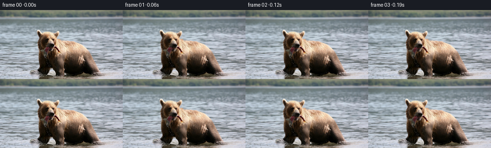
代码变化
--- 上一保存版本
+++ 本次保存版本
@@ -0,0 +1,148 @@
+"""Generate a short, deterministic motion continuation from first_frame.png."""
+
+from pathlib import Path
+
+import cv2
+import numpy as np
+from PIL import Image
+
+from artifact_io import save
+
+
+CASE_DIR = Path(__file__).resolve().parent
+WIDTH = 256
+HEIGHT = 144
+FRAME_COUNT = 81
+FPS = 16
+
+
+def smooth_window(values: np.ndarray, radius: int) -> np.ndarray:
+ kernel = np.ones(radius * 2 + 1, dtype=np.float32)
+ kernel /= kernel.sum()
+ padded = np.pad(values, radius, mode="edge")
+ return np.convolve(padded, kernel, mode="valid")
+
+
+def gaussian_field(xx: np.ndarray, yy: np.ndarray, cx: float, cy: float, sx: float, sy: float) -> np.ndarray:
+ return np.exp(-0.5 * (((xx - cx) / sx) ** 2 + ((yy - cy) / sy) ** 2))
+
+
+def rotation_samples(
+ xx: np.ndarray,
+ yy: np.ndarray,
+ cx: float,
+ cy: float,
+ angle: float,
+ weight: np.ndarray,
+) -> tuple[np.ndarray, np.ndarray]:
+ cosine = np.cos(angle)
+ sine = np.sin(angle)
+ dx = xx - cx
+ dy = yy - cy
+ rx = cosine * dx + sine * dy + cx
+ ry = -sine * dx + cosine * dy + cy
+ return xx + weight * (rx - xx), yy + weight * (ry - yy)
+
+
+def make_frame(source: np.ndarray, frame_index: int) -> np.ndarray:
+ if frame_index == 0:
+ return source.copy()
+
+ t = frame_index / FPS
+ # The gait is deliberately irregular so it reads as an animal shifting its
+ # weight, rather than a looping mechanical deformation.
+ breath = np.sin(2 * np.pi * 0.72 * t)
+ sway = np.sin(2 * np.pi * 0.43 * t - 0.8)
+ head_nod = np.sin(2 * np.pi * 0.61 * t + 0.4)
+ chew = np.sin(2 * np.pi * 1.85 * t + 1.1)
+
+ yy, xx = np.mgrid[0:HEIGHT, 0:WIDTH].astype(np.float32)
+ map_x = xx.copy()
+ map_y = yy.copy()
+
+ # Whole-body weight shift: tiny horizontal and vertical movement concentrated
+ # on the torso, tapering smoothly into the head and paws.
+ torso = gaussian_field(xx, yy, 158, 99, 74, 50)
+ torso *= np.clip((yy - 37) / 35, 0, 1)
+ map_x += torso * (0.70 * sway)
+ map_y += torso * (0.40 * breath - 0.18 * sway)
+
+ # Head and neck follow the torso but with a small independent nod.
+ head = gaussian_field(xx, yy, 111, 57, 45, 42)
+ map_x += head * (0.35 * sway + 0.16 * head_nod)
+ map_y += head * (0.75 * breath + 0.35 * head_nod)
+
+ # Keep the planted foreleg quiet while the shoulder and chest move.
+ foreleg = gaussian_field(xx, yy, 88, 119, 16, 24)
+ map_x -= foreleg * (0.42 * sway)
+ map_y -= foreleg * (0.24 * breath)
+
+ # The fish pivots at the jaw. A feathered elliptical influence gives it a
+ # springy wag without tearing the surrounding muzzle pixels.
+ fish_anchor_x, fish_anchor_y = 79.0, 82.0
+ fish = gaussian_field(xx, yy, 99, 90, 24, 21)
+ fish *= (xx > 72) & (yy > 66) & (yy < 111)
+ fish_angle = np.deg2rad(2.6 * np.sin(2 * np.pi * 1.35 * t + 0.7))
+ fx, fy = rotation_samples(xx, yy, fish_anchor_x, fish_anchor_y, fish_angle, fish)
+ map_x = fx
+ map_y = fy
+ map_x += fish * (0.55 * np.sin(2 * np.pi * 1.08 * t))
+ map_y += fish * (0.40 * chew)
+
+ # A restrained jaw/cheek deformation makes the grip on the fish feel active.
+ jaw = gaussian_field(xx, yy, 83, 91, 13, 10)
+ jaw *= (yy > 77) & (xx < 99)
+ map_y += jaw * (0.75 * chew)
+ map_x += jaw * (0.18 * head_nod)
+
+ # Small ear response adds secondary motion at the silhouette.
+ ear_l = gaussian_field(xx, yy, 88, 43, 8, 8)
+ ear_r = gaussian_field(xx, yy, 120, 45, 8, 8)
+ map_y += (ear_l + ear_r) * (0.32 * np.sin(2 * np.pi * 0.72 * t + 1.9))
+
+ # Reflected wavelets travel toward the viewer. Displacement increases with
+ # distance from the horizon and is suppressed over the animal.
+ water_depth = np.clip((yy - 30) / 100, 0, 1)
+ bear_guard = 1.0 - np.clip(
+ gaussian_field(xx, yy, 149, 91, 90, 52) * 1.35, 0, 1
+ )
+ wave_phase = (
+ 2 * np.pi * (yy / 17.0 + 0.17 * np.sin(xx / 28.0))
+ - 2 * np.pi * 0.52 * t
+ )
+ wave = np.sin(wave_phase)
+ map_y += water_depth * bear_guard * 0.42 * wave
+ map_x += water_depth * bear_guard * 0.12 * np.sin(
+ 2 * np.pi * (xx / 41.0 - 0.31 * t)
+ )
+
+ # Bilinear sampling retains the original photographic texture.
+ frame = cv2.remap(
+ source,
+ map_x.astype(np.float32),
+ map_y.astype(np.float32),
+ interpolation=cv2.INTER_LINEAR,
+ borderMode=cv2.BORDER_REFLECT_101,
+ )
+
+ # Add very soft moving highlights to the open-water crests only. The bear is
+ # excluded so its fur does not shimmer like the water.
+ open_water = np.clip((yy - 35) / 100, 0, 1) * bear_guard
+ crest = np.maximum(0, np.cos(wave_phase)) ** 9
+ highlight = (open_water * crest * 4.2).astype(np.float32)
+ frame = np.clip(frame.astype(np.float32) + highlight[..., None], 0, 255).astype(np.uint8)
+ return frame
+
+
+def main() -> None:
+ source = np.asarray(Image.open(CASE_DIR / "first_frame.png").convert("RGB"), dtype=np.uint8)
+ assert source.shape == (HEIGHT, WIDTH, 3)
+ frames = np.stack([make_frame(source, index) for index in range(FRAME_COUNT)])
+ assert frames.shape == (FRAME_COUNT, HEIGHT, WIDTH, 3)
+ assert frames.dtype == np.uint8
+ assert np.array_equal(frames[0], source)
+ save(frames, CASE_DIR)
+
+
+if __name__ == "__main__":
+ main()
候选 02 · 2026-11-08T20:39:31.578251+00:00 · 点开播放与检查图
inspection.png
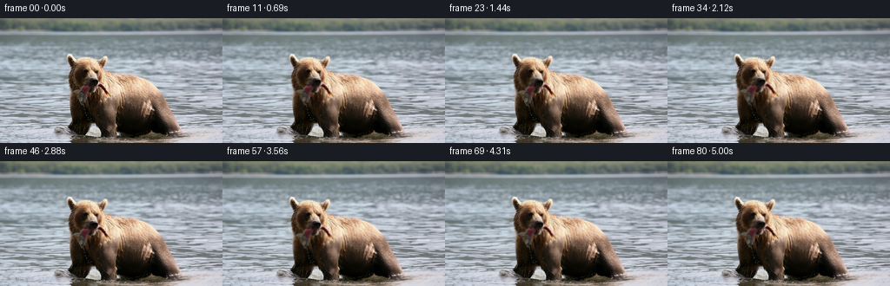
transition_check.png

代码变化
--- 上一保存版本
+++ 本次保存版本
@@ -55,6 +55,8 @@
sway = np.sin(2 * np.pi * 0.43 * t - 0.8)
head_nod = np.sin(2 * np.pi * 0.61 * t + 0.4)
chew = np.sin(2 * np.pi * 1.85 * t + 1.1)
+ ease = np.clip(t / 0.48, 0, 1)
+ ease = ease * ease * (3 - 2 * ease)
yy, xx = np.mgrid[0:HEIGHT, 0:WIDTH].astype(np.float32)
map_x = xx.copy()
@@ -64,41 +66,39 @@
# on the torso, tapering smoothly into the head and paws.
torso = gaussian_field(xx, yy, 158, 99, 74, 50)
torso *= np.clip((yy - 37) / 35, 0, 1)
- map_x += torso * (0.70 * sway)
- map_y += torso * (0.40 * breath - 0.18 * sway)
+ map_x += ease * torso * (0.70 * sway)
+ map_y += ease * torso * (0.40 * breath - 0.18 * sway)
# Head and neck follow the torso but with a small independent nod.
head = gaussian_field(xx, yy, 111, 57, 45, 42)
- map_x += head * (0.35 * sway + 0.16 * head_nod)
- map_y += head * (0.75 * breath + 0.35 * head_nod)
+ map_x += ease * head * (0.35 * sway + 0.16 * head_nod)
+ map_y += ease * head * (0.75 * breath + 0.35 * head_nod)
# Keep the planted foreleg quiet while the shoulder and chest move.
foreleg = gaussian_field(xx, yy, 88, 119, 16, 24)
- map_x -= foreleg * (0.42 * sway)
- map_y -= foreleg * (0.24 * breath)
+ map_x -= ease * foreleg * (0.42 * sway)
+ map_y -= ease * foreleg * (0.24 * breath)
# The fish pivots at the jaw. A feathered elliptical influence gives it a
# springy wag without tearing the surrounding muzzle pixels.
fish_anchor_x, fish_anchor_y = 79.0, 82.0
fish = gaussian_field(xx, yy, 99, 90, 24, 21)
fish *= (xx > 72) & (yy > 66) & (yy < 111)
- fish_angle = np.deg2rad(2.6 * np.sin(2 * np.pi * 1.35 * t + 0.7))
+ fish_angle = np.deg2rad(4.2 * np.sin(2 * np.pi * 1.35 * t + 0.7))
fx, fy = rotation_samples(xx, yy, fish_anchor_x, fish_anchor_y, fish_angle, fish)
- map_x = fx
- map_y = fy
- map_x += fish * (0.55 * np.sin(2 * np.pi * 1.08 * t))
- map_y += fish * (0.40 * chew)
+ map_x += ease * fish * ((fx - xx) + 0.45 * np.sin(2 * np.pi * 1.08 * t))
+ map_y += ease * fish * ((fy - yy) + 0.65 * chew)
# A restrained jaw/cheek deformation makes the grip on the fish feel active.
jaw = gaussian_field(xx, yy, 83, 91, 13, 10)
jaw *= (yy > 77) & (xx < 99)
- map_y += jaw * (0.75 * chew)
- map_x += jaw * (0.18 * head_nod)
+ map_y += ease * jaw * (0.90 * chew)
+ map_x += ease * jaw * (0.18 * head_nod)
# Small ear response adds secondary motion at the silhouette.
ear_l = gaussian_field(xx, yy, 88, 43, 8, 8)
ear_r = gaussian_field(xx, yy, 120, 45, 8, 8)
- map_y += (ear_l + ear_r) * (0.32 * np.sin(2 * np.pi * 0.72 * t + 1.9))
+ map_y += ease * (ear_l + ear_r) * (0.32 * np.sin(2 * np.pi * 0.72 * t + 1.9))
# Reflected wavelets travel toward the viewer. Displacement increases with
# distance from the horizon and is suppressed over the animal.
@@ -111,8 +111,8 @@
- 2 * np.pi * 0.52 * t
)
wave = np.sin(wave_phase)
- map_y += water_depth * bear_guard * 0.42 * wave
- map_x += water_depth * bear_guard * 0.12 * np.sin(
+ map_y += ease * water_depth * bear_guard * 0.42 * wave
+ map_x += ease * water_depth * bear_guard * 0.12 * np.sin(
2 * np.pi * (xx / 41.0 - 0.31 * t)
)
@@ -129,7 +129,7 @@
# excluded so its fur does not shimmer like the water.
open_water = np.clip((yy - 35) / 100, 0, 1) * bear_guard
crest = np.maximum(0, np.cos(wave_phase)) ** 9
- highlight = (open_water * crest * 4.2).astype(np.float32)
+ highlight = (ease * open_water * crest * 4.2).astype(np.float32)
frame = np.clip(frame.astype(np.float32) + highlight[..., None], 0, 255).astype(np.uint8)
return frame
候选 03 · 2026-11-08T20:39:36.473944+00:00 · 点开播放与检查图
inspection.png

transition_check.png
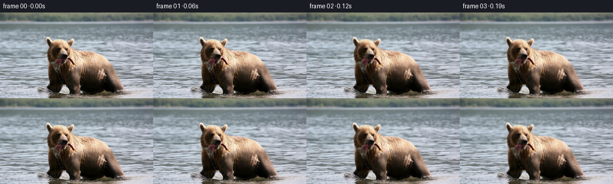
代码变化
代码未变化；重新保存了产物。
候选 04 · 2026-11-08T20:41:02.244769+00:00 · 点开播放与检查图
inspection.png
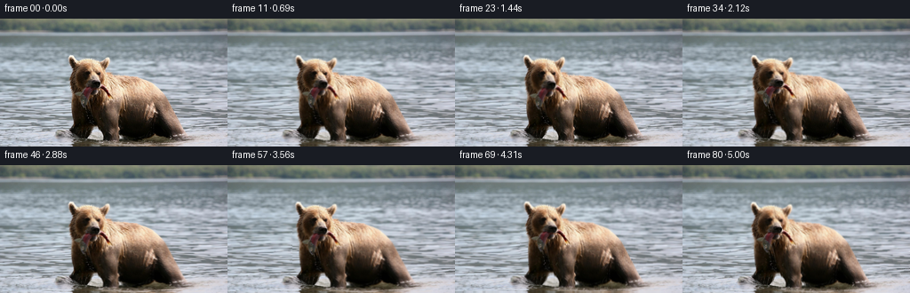
transition_check.png
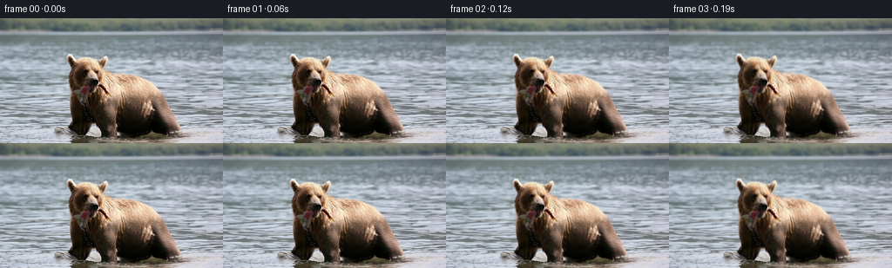
代码变化
--- 上一保存版本
+++ 本次保存版本
@@ -66,39 +66,39 @@
# on the torso, tapering smoothly into the head and paws.
torso = gaussian_field(xx, yy, 158, 99, 74, 50)
torso *= np.clip((yy - 37) / 35, 0, 1)
- map_x += ease * torso * (0.70 * sway)
- map_y += ease * torso * (0.40 * breath - 0.18 * sway)
+ map_x += ease * torso * (1.05 * sway)
+ map_y += ease * torso * (0.68 * breath - 0.28 * sway)
# Head and neck follow the torso but with a small independent nod.
head = gaussian_field(xx, yy, 111, 57, 45, 42)
- map_x += ease * head * (0.35 * sway + 0.16 * head_nod)
- map_y += ease * head * (0.75 * breath + 0.35 * head_nod)
+ map_x += ease * head * (0.58 * sway + 0.32 * head_nod)
+ map_y += ease * head * (1.10 * breath + 0.62 * head_nod)
# Keep the planted foreleg quiet while the shoulder and chest move.
foreleg = gaussian_field(xx, yy, 88, 119, 16, 24)
- map_x -= ease * foreleg * (0.42 * sway)
- map_y -= ease * foreleg * (0.24 * breath)
+ map_x -= ease * foreleg * (0.60 * sway)
+ map_y -= ease * foreleg * (0.36 * breath)
# The fish pivots at the jaw. A feathered elliptical influence gives it a
# springy wag without tearing the surrounding muzzle pixels.
fish_anchor_x, fish_anchor_y = 79.0, 82.0
fish = gaussian_field(xx, yy, 99, 90, 24, 21)
fish *= (xx > 72) & (yy > 66) & (yy < 111)
- fish_angle = np.deg2rad(4.2 * np.sin(2 * np.pi * 1.35 * t + 0.7))
+ fish_angle = np.deg2rad(8.0 * np.sin(2 * np.pi * 1.35 * t + 0.7))
fx, fy = rotation_samples(xx, yy, fish_anchor_x, fish_anchor_y, fish_angle, fish)
- map_x += ease * fish * ((fx - xx) + 0.45 * np.sin(2 * np.pi * 1.08 * t))
- map_y += ease * fish * ((fy - yy) + 0.65 * chew)
+ map_x += ease * fish * ((fx - xx) + 0.80 * np.sin(2 * np.pi * 1.08 * t))
+ map_y += ease * fish * ((fy - yy) + 1.05 * chew)
# A restrained jaw/cheek deformation makes the grip on the fish feel active.
jaw = gaussian_field(xx, yy, 83, 91, 13, 10)
jaw *= (yy > 77) & (xx < 99)
- map_y += ease * jaw * (0.90 * chew)
- map_x += ease * jaw * (0.18 * head_nod)
+ map_y += ease * jaw * (1.45 * chew)
+ map_x += ease * jaw * (0.28 * head_nod)
# Small ear response adds secondary motion at the silhouette.
ear_l = gaussian_field(xx, yy, 88, 43, 8, 8)
ear_r = gaussian_field(xx, yy, 120, 45, 8, 8)
- map_y += ease * (ear_l + ear_r) * (0.32 * np.sin(2 * np.pi * 0.72 * t + 1.9))
+ map_y += ease * (ear_l + ear_r) * (0.52 * np.sin(2 * np.pi * 0.72 * t + 1.9))
# Reflected wavelets travel toward the viewer. Displacement increases with
# distance from the horizon and is suppressed over the animal.
@@ -111,8 +111,8 @@
- 2 * np.pi * 0.52 * t
)
wave = np.sin(wave_phase)
- map_y += ease * water_depth * bear_guard * 0.42 * wave
- map_x += ease * water_depth * bear_guard * 0.12 * np.sin(
+ map_y += ease * water_depth * bear_guard * 0.72 * wave
+ map_x += ease * water_depth * bear_guard * 0.20 * np.sin(
2 * np.pi * (xx / 41.0 - 0.31 * t)
)
@@ -129,7 +129,7 @@
# excluded so its fur does not shimmer like the water.
open_water = np.clip((yy - 35) / 100, 0, 1) * bear_guard
crest = np.maximum(0, np.cos(wave_phase)) ** 9
- highlight = (ease * open_water * crest * 4.2).astype(np.float32)
+ highlight = (ease * open_water * crest * 6.0).astype(np.float32)
frame = np.clip(frame.astype(np.float32) + highlight[..., None], 0, 255).astype(np.uint8)
return frame
可观测工具行为
命令 1 · 2026-11-08T20:32:55.723450+00:00/bin/bash -c "pwd && rg --files -g 'prompt.txt' -g 'GENERATION_RULES.md' -g '"'!node_modules'"' -g '"'!vendor'"'"
exit 0 命令 2 · 2026-11-08T20:32:56.082073+00:00/bin/bash -c "ls -la && find . -maxdepth 2 -type f | sort | sed -n '1,200p'"
exit 0 命令 3 · 2026-11-08T20:33:02.385019+00:00/bin/bash -c 'cat GENERATION_RULES.md'
exit 0 命令 4 · 2026-11-08T20:33:02.573417+00:00/bin/bash -c "cat prompt.txt && printf '\\n--- task_spec ---\\n' && cat task_spec.json"
exit 0 命令 5 · 2026-11-08T20:33:02.871670+00:00/bin/bash -c "sed -n '1,260p' artifact_io.py"
exit 0 命令 6 · 2026-11-08T20:33:20.216675+00:00/bin/bash -c "python - <<'PY'
try:
import cv2; print('cv2', cv2.__version__)
except Exception as e: print('no cv2', e)
try:
import scipy; print('scipy', scipy.__version__)
except Exception as e: print('no scipy', e)
PY"exit 0 命令 7 · 2026-11-08T20:33:20.440963+00:00/bin/bash -c "python - <<'PY'
from PIL import Image
im=Image.open('first_frame.png')
print(im.mode, im.size)
PY"exit 0 命令 8 · 2026-11-08T20:33:35.081420+00:00/bin/bash -c "python - <<'PY'
from PIL import Image
im=Image.open('first_frame.png')
im.crop((65,25,160,125)).resize((570,600)).save('.tmp/bear_head_zoom.png')
PY"exit 0 命令 9 · 2026-11-08T20:34:14.304886+00:00/bin/bash -c "python - <<'PY'
import cv2, numpy as np
from PIL import Image
im=cv2.imread('first_frame.png')
rgb=cv2.cvtColor(im,cv2.COLOR_BGR2RGB)
poly=np.array([(76,74),(85,74),(92,77),(100,74),(108,69),(118,75),(113,84),(111,94),(107,105),(97,107),(90,101),(84,94),(79,86)],np.int32)
mask=np.zeros(im.shape[:2],np.uint8); cv2.fillPoly(mask,[poly],255)
# crop and enlarged original with coordinate grid
crop=im[60:112,68:124].copy()
cv2.imwrite('.tmp/fish_crop.png',cv2.resize(crop,None,fx=8,fy=8,interpolation=cv2.INTER_NEAREST))
# cluster colors in polygon
pix=rgb[mask>0].astype(np.float32)
crit=(cv2.TERM_CRITERIA_EPS+cv2.TERM_CRITERIA_MAX_ITER,100,0.2)
_,lab,cent=cv2.kmeans(pix,6,None,crit,10,cv2.KMEANS_PP_CENTERS)
print(cent.astype(int))
# candidate silver: B>=R-10, brightness > 50, blue-green over red? print counts
r,g,b=[rgb[:,:,i] for i in range(3)]
cand=((mask>0)&(b.astype(int)>=r.astype(int)-8)&(np.maximum.reduce([r,g,b])>70)&(np.abs(r.astype(int)-g.astype(int))<55)).astype(np.uint8)*255
vis=im.copy(); vis[cand>0]=(0,255,255)
cv2.imwrite('.tmp/fish_mask_overlay.png',cv2.resize(vis[55:112,65:125],None,fx=8,fy=8,interpolation=cv2.INTER_NEAREST))
PY"exit 0 命令 10 · 2026-11-08T20:34:31.090365+00:00/bin/bash -c "python - <<'PY'
import cv2, numpy as np
im=cv2.imread('first_frame.png')
rgb=cv2.cvtColor(im,cv2.COLOR_BGR2RGB).astype(np.int16)
# define fish union by hand as smooth-ish polygon
polys=[[(74,73),(84,72),(91,76),(99,74),(108,69),(119,75),(114,83),(112,93),(107,105),(99,108),(94,105),(87,99),(81,92),(77,85)],[(82,79),(91,77),(101,80),(112,78),(116,85),(107,88),(97,86),(88,84)]]
mask=np.zeros(im.shape[:2],np.uint8)
for p in polys: cv2.fillPoly(mask,[np.array(p,np.int32)],255)
mask=cv2.GaussianBlur(mask,(3,3),0)
vis=im.copy(); vis[mask>64]=(0,255,255)
cv2.imwrite('.tmp/fish_mask2.png',cv2.resize(vis[55:112,65:125],None,fx=8,fy=8,interpolation=cv2.INTER_NEAREST))
# erase mask filled background water
base=im.copy(); ys,xs=np.where(mask>0)
# estimate water row from surrounding at x around 70 and 125
for y,x in zip(ys,xs):
vals=[]
for dx in (-10,10,-15,15):
xx=x+dx
if 0<=xx<256: vals.append(im[y,xx].astype(float))
base[y,x]=np.median(vals,axis=0)
cv2.imwrite('.tmp/fish_removed.png',cv2.resize(base[55:112,65:125],None,fx=8,fy=8,interpolation=cv2.INTER_NEAREST))
PY"exit 0 命令 11 · 2026-11-08T20:34:49.785569+00:00/bin/bash -c "python - <<'PY'
from PIL import Image,ImageDraw,ImageFont
im=Image.open('first_frame.png').resize((1024,576),Image.Resampling.NEAREST)
d=ImageDraw.Draw(im)
for x in range(0,256,10):
d.line([(x*4,0),(x*4,576)],fill=(255,0,0),width=1)
d.text((x*4+2,2),str(x),fill=(255,255,0))
for y in range(0,144,10):
d.line([(0,y*4),(1024,y*4)],fill=(255,0,0),width=1)
d.text((2,y*4+2),str(y),fill=(255,255,0))
im.save('.tmp/grid.png')
PY"exit 0 命令 12 · 2026-11-08T20:35:15.079029+00:00/bin/bash -c "python - <<'PY'
import cv2,numpy as np
im=cv2.imread('first_frame.png'); rgb=cv2.cvtColor(im,cv2.COLOR_BGR2RGB).astype(np.int16)
r,g,b=rgb[:,:,0],rgb[:,:,1],rgb[:,:,2]
mask=((r-b>10)&(r-g>2)&(r>45)).astype(np.uint8)*255
mask[:32]=0; mask[:,:58]=0
mask=cv2.morphologyEx(mask,cv2.MORPH_CLOSE,np.ones((7,7),np.uint8))
mask=cv2.dilate(mask,np.ones((5,5),np.uint8))
# keep components touching main bear region
n,lab,stats,cent=cv2.connectedComponentsWithStats(mask)
keep=np.zeros_like(mask)
for k in range(1,n):
if stats[k,cv2.CC_STAT_AREA]>30: keep[lab==k]=255
vis=im.copy(); vis[keep>0]=(0,0,255)
blend=cv2.addWeighted(im,.55,vis,.45,0)
cv2.imwrite('.tmp/bear_seg.png',cv2.resize(blend,None,fx=4,fy=4,interpolation=cv2.INTER_NEAREST))
PY"exit 0 命令 13 · 2026-11-08T20:35:47.180577+00:00/bin/bash -c "python - <<'PY'
import cv2,numpy as np
img=cv2.imread('first_frame.png')
h,w=img.shape[:2]
poly=np.array([(61,93),(68,83),(77,74),(84,66),(88,52),(88,45),(91,36),(102,34),(111,37),(116,41),(123,43),(130,42),(137,46),(145,51),(156,53),(167,54),(178,60),(191,67),(202,75),(212,85),(219,95),(222,108),(221,121),(216,130),(205,132),(187,132),(173,129),(160,125),(154,120),(146,112),(139,108),(132,108),(125,112),(119,118),(113,125),(109,132),(94,132),(82,132),(73,132),(67,128),(65,121),(69,114),(71,108),(66,103)],np.int32)
mask=np.zeros((h,w),np.uint8); cv2.fillPoly(mask,[poly],cv2.GC_PR_FGD)
mask[mask==0]=cv2.GC_BGD
# definite bg outside 8px dilate, definite fg narrow core
bg=cv2.dilate(mask,cv2.getStructuringElement(cv2.MORPH_ELLIPSE,(15,15)))
mask[(mask==cv2.GC_PR_FGD)]=cv2.GC_PR_BGD
mask[(bg==cv2.GC_BGD)]=cv2.GC_BGD
# inner eroded polygon definite fg
inner=np.zeros((h,w),np.uint8); cv2.fillPoly(inner,[poly],255); inner=cv2.erode(inner,np.ones((5,5),np.uint8))
mask[inner>0]=cv2.GC_FGD
bgdModel=np.zeros((1,65),np.float64);fgdModel=np.zeros((1,65),np.float64)
cv2.grabCut(img,mask,None,bgdModel,fgdModel,6,cv2.GC_INIT_WITH_MASK)
out=np.where((mask==cv2.GC_FGD)|(mask==cv2.GC_PR_FGD),255,0).astype(np.uint8)
# clean and fill
out=cv2.morphologyEx(out,cv2.MORPH_CLOSE,np.ones((5,5),np.uint8))
out=cv2.morphologyEx(out,cv2.MORPH_OPEN,np.ones((3,3),np.uint8))
# keep largest comp
n,lab,stats,_=cv2.connectedComponentsWithStats(out)
k=1+np.argmax(stats[1:,cv2.CC_STAT_AREA]); out=(lab==k).astype(np.uint8)*255
# ensure union with inner fish polygon? add fish polygon
fish=np.array([(75,72),(84,71),(92,76),(100,73),(108,69),(119,75),(114,84),(112,94),(107,105),(99,108),(94,104),(86,98),(80,91),(77,84)],np.int32)
# fill holes in bear
ff=out.copy(); ff=cv2.floodFill(ff,None,(0,0),255)[1]; holes=cv2.bitwise_not(ff); out=cv2.bitwise_or(out,holes)
# only holes in bbox maybe all outside? floodFill weird
vis=img.copy(); vis[out>0]=(0,0,255); blend=cv2.addWeighted(img,.5,vis,.5,0)
cv2.imwrite('.tmp/bear_grabcut.png',cv2.resize(blend,None,fx=4,fy=4,interpolation=cv2.INTER_NEAREST))
cv2.imwrite('.tmp/bear_mask.png',out)
PY"exit 0 命令 14 · 2026-11-08T20:35:57.820270+00:00/bin/bash -c "python - <<'PY'
import cv2,numpy as np
img=cv2.imread('first_frame.png'); h,w=img.shape[:2]
poly=np.array([(65,105),(64,95),(70,85),(77,77),(83,68),(87,57),(88,45),(94,36),(104,34),(112,37),(117,41),(123,43),(130,42),(138,46),(146,51),(156,53),(167,54),(177,59),(188,65),(199,73),(209,82),(217,91),(221,104),(222,116),(219,127),(211,131),(198,132),(184,131),(170,127),(160,122),(153,117),(145,112),(139,108),(131,108),(124,112),(117,119),(112,127),(108,132),(96,132),(83,132),(73,132),(67,128),(66,120),(69,113),(72,108),(68,102)],np.int32)
mask=np.zeros((h,w),np.uint8); cv2.fillPoly(mask,[poly],255)
# remove fish before flood-fill style? not necessary
# feather mask in two stages, conservative so no bear eaten
mask=cv2.GaussianBlur(mask,(5,5),1.2)
alpha=mask.astype(np.float32)/255
# source bear pixels on transparent canvas
fg=img.astype(np.float32)
# inpaint background from outside matte using cv2 inpaint (not policy issue, image math)
holes=((mask>128)&(np.indices((h,w))[1]>55)&(np.indices((h,w))[1]<228)).astype(np.uint8)*255
# remove fish polygon from inpaint? leave
bg=cv2.inpaint(img, holes, 7, cv2.INPAINT_TELEA)
# blend source with bg at edges
layer=(fg*alpha[...,None]+bg.astype(np.float32)*(1-alpha[...,None])).clip(0,255).astype(np.uint8)
cv2.imwrite('.tmp/bear_layer_preview.png',layer)
cv2.imwrite('.tmp/bg_plate.png',bg)
# create diff visual
cv2.imwrite('.tmp/bg_plate_zoom.png',cv2.resize(bg[40:140,40:240],None,fx=3,fy=3,interpolation=cv2.INTER_NEAREST))
PY"exit 0 命令 15 · 2026-11-08T20:36:14.457116+00:00/bin/bash -c "python - <<'PY'
from PIL import Image
im=Image.open('first_frame.png')
im.crop((68,65,120,112)).resize((832,752),Image.Resampling.LANCZOS).save('.tmp/fish_zoom.png')
PY"exit 0 命令 16 · 2026-11-08T20:36:35.981618+00:00/bin/bash -c "python - <<'PY'
import cv2,numpy as np
im=cv2.imread('first_frame.png'); rgb=cv2.cvtColor(im,cv2.COLOR_BGR2RGB).astype(np.int16)
h,w=im.shape[:2]; yy,xx=np.indices((h,w))
poly=np.array([(74,73),(85,71),(94,77),(101,73),(109,69),(120,75),(114,84),(113,93),(108,105),(99,109),(92,105),(85,98),(79,91),(76,84)],np.int32)
roi=np.zeros((h,w),np.uint8); cv2.fillPoly(roi,[poly],255)
r,g,b=rgb[:,:,0],rgb[:,:,1],rgb[:,:,2]
# silver/white pixels, plus all in lower body interior
bright=(r>68)&(g>60)&(b>58)
neutral=(np.maximum.reduce([r,g,b])-np.minimum.reduce([r,g,b])<45)
mask=(roi>0)&bright&neutral
# include red gill only if adjacent? start silver, close and fill holes
m=(mask*255).astype(np.uint8)
m=cv2.morphologyEx(m,cv2.MORPH_CLOSE,np.ones((5,5),np.uint8))
m=cv2.dilate(m,np.ones((3,3),np.uint8))
# fill holes globally using contour largest
contours,_=cv2.findContours(m,cv2.RETR_EXTERNAL,cv2.CHAIN_APPROX_SIMPLE)
m2=np.zeros_like(m); cv2.drawContours(m2,contours,-1,255,-1)
m2=cv2.bitwise_and(m2,roi)
vis=im.copy(); vis[m2>0]=(0,0,255); cv2.imwrite('.tmp/fish_seg3.png',cv2.resize(cv2.addWeighted(im,.5,vis,.5,0)[65:112,68:125],None,fx=8,fy=8,interpolation=cv2.INTER_NEAREST))
# show mask alone
cv2.imwrite('.tmp/fish_mask3.png',cv2.resize(m2[65:112,68:125],None,fx=8,fy=8,interpolation=cv2.INTER_NEAREST))
# alpha matte fish layer
alpha=cv2.GaussianBlur(m2,(3,3),.7).astype(np.float32)/255
layer=(im.astype(np.float32)*alpha[...,None]).astype(np.uint8)
cv2.imwrite('.tmp/fish_layer.png',cv2.resize(layer[65:112,68:125],None,fx=8,fy=8,interpolation=cv2.INTER_NEAREST))
PY"exit 0 命令 17 · 2026-11-08T20:36:47.161743+00:00/bin/bash -c "python - <<'PY'
import cv2,numpy as np
im=cv2.imread('first_frame.png'); rgb=cv2.cvtColor(im,cv2.COLOR_BGR2RGB).astype(np.int16)
h,w=im.shape[:2]
poly=np.array([(75,73),(85,71),(94,77),(101,73),(109,69),(120,75),(114,84),(113,93),(108,105),(99,109),(92,105),(85,98),(79,91),(76,84)],np.int32)
roi=np.zeros((h,w),np.uint8); cv2.fillPoly(roi,[poly],255)
# hand-made silver fish mask in ROI coords using contours for different zones
# head/body broad, with tail narrower, leaving visible red gill at upper-left
m=np.zeros((h,w),np.uint8)
cv2.fillPoly(m,[np.array([(77,79),(83,75),(91,78),(97,76),(104,74),(111,71),(119,75),(114,83),(112,92),(108,104),(100,108),(94,104),(87,97),(81,91)],np.int32)],255)
# add lower body thickness
cv2.fillPoly(m,[np.array([(84,84),(99,83),(110,83),(113,92),(108,104),(99,108),(92,101),(85,93)],np.int32)],255)
# feather, remove tiny detached bits
m=cv2.GaussianBlur(m,(3,3),.6)
vis=im.copy(); vis[m>64]=(0,0,255)
cv2.imwrite('.tmp/fish_seg4.png',cv2.resize(cv2.addWeighted(im,.5,vis,.5,0)[65:112,68:125],None,fx=8,fy=8,interpolation=cv2.INTER_NEAREST))
alpha=(m.astype(np.float32)/255)[...,None]
layer=(im.astype(np.float32)*alpha).astype(np.uint8)
cv2.imwrite('.tmp/fish_layer4.png',cv2.resize(layer[65:112,68:125],None,fx=8,fy=8,interpolation=cv2.INTER_NEAREST))
PY"exit 0 命令 18 · 2026-11-08T20:37:16.387132+00:00/bin/bash -c "python - <<'PY'
import cv2,numpy as np
img=cv2.imread('first_frame.png'); h,w=img.shape[:2]
poly=np.array([(63,133),(63,118),(65,103),(70,92),(76,82),(81,72),(84,62),(86,52),(85,44),(80,37),(79,31),(83,27),(91,29),(95,37),(102,34),(109,35),(114,39),(119,44),(124,44),(128,39),(134,42),(138,47),(145,50),(156,52),(168,55),(179,61),(190,68),(200,76),(209,85),(216,95),(220,106),(221,117),(219,126),(212,131),(200,132),(186,132),(174,129),(162,124),(154,119),(146,112),(140,108),(132,108),(125,112),(119,119),(113,126),(109,133)],np.int32)
mask=np.full((h,w),cv2.GC_PR_BGD,np.uint8)
cv2.fillPoly(mask,[poly],cv2.GC_PR_FGD)
inner=cv2.erode(cv2.fillPoly(np.zeros((h,w),np.uint8),[poly],255),np.ones((7,7),np.uint8))
mask[inner>0]=cv2.GC_FGD
bgpoly=cv2.dilate(cv2.fillPoly(np.zeros((h,w),np.uint8),[poly],255),np.ones((11,11),np.uint8))
mask[bgpoly==0]=cv2.GC_BGD
bgd=np.zeros((1,65),np.float64);fgd=np.zeros((1,65),np.float64)
cv2.grabCut(img,mask,None,bgd,fgd,8,cv2.GC_INIT_WITH_MASK)
out=np.where((mask==cv2.GC_FGD)|(mask==cv2.GC_PR_FGD),255,0).astype(np.uint8)
# limit to polygon expanded and fill holes by largest contour? GrabCut could fragment
out=cv2.bitwise_and(out,cv2.dilate(cv2.fillPoly(np.zeros((h,w),np.uint8),[poly],255),np.ones((3,3),np.uint8)))
out=cv2.morphologyEx(out,cv2.MORPH_CLOSE,np.ones((5,5),np.uint8))
n,lab,stats,_=cv2.connectedComponentsWithStats(out)
keep=np.zeros_like(out)
for k in range(1,n):
if stats[k,cv2.CC_STAT_AREA]>25: keep[lab==k]=255
# close small holes
contours,_=cv2.findContours(keep,cv2.RETR_EXTERNAL,cv2.CHAIN_APPROX_SIMPLE)
keep=np.zeros_like(out); cv2.drawContours(keep,contours,-1,255,-1)
vis=img.copy(); vis[keep>0]=(0,0,255); blend=cv2.addWeighted(img,.55,vis,.45,0)
cv2.imwrite('.tmp/gc2.png',cv2.resize(blend,None,fx=4,fy=4,interpolation=cv2.INTER_NEAREST))
cv2.imwrite('.tmp/gc2mask.png',keep)
PY"exit 0 命令 19 · 2026-11-08T20:37:34.058428+00:00/bin/bash -c "python - <<'PY'
import cv2,numpy as np
mask=cv2.imread('.tmp/gc2mask.png',0)
im=cv2.imread('first_frame.png')
vis=np.zeros_like(im); vis[:]=(255,0,255); vis[mask>0]=im[mask>0]
cv2.imwrite('.tmp/mask_on_magenta.png',cv2.resize(vis,None,fx=4,fy=4,interpolation=cv2.INTER_NEAREST))
# Also outline
out=im.copy(); cnts,_=cv2.findContours(mask,cv2.RETR_EXTERNAL,cv2.CHAIN_APPROX_SIMPLE); cv2.drawContours(out,cnts,-1,(0,255,0),1)
cv2.imwrite('.tmp/mask_outline.png',cv2.resize(out,None,fx=4,fy=4,interpolation=cv2.INTER_NEAREST))
PY"exit 0 命令 20 · 2026-11-08T20:38:05.247813+00:00/bin/bash -c 'python generate.py'
exit 1 命令 21 · 2026-11-08T20:38:18.711889+00:00/bin/bash -c 'python generate.py'
exit 0 命令 22 · 2026-11-08T20:38:35.841050+00:00/bin/bash -c "python - <<'PY'
from PIL import Image, ImageDraw
import numpy as np
idx=[0,8,16,24,32,40,48,56,64,72,80]
frames=[Image.open(f'frames/{i:02d}.png') for i in idx]
# zoomed bear crop, 4 columns
crop=(55,25,230,138)
cw,ch=175,113; scale=2
sheet=Image.new('RGB',(cw*scale*4,(ch*scale+20)*3),(20,22,25)); d=ImageDraw.Draw(sheet)
for j,(i,fr) in enumerate(zip(idx,frames)):
x=(j%4)*cw*scale; y=(j//4)*(ch*scale+20)
d.text((x+4,y+3),f'frame {i:02d} {i/16:.2f}s',fill='white')
sheet.paste(fr.crop(crop).resize((cw*scale,ch*scale),Image.Resampling.NEAREST),(x,y+20))
sheet.save('.tmp/motion_zoom_sheet.png')
# fish crop zoom all frames sampled
crop2=(68,65,124,112); cw2,ch2=56,47; scale=6
sheet2=Image.new('RGB',(cw2*scale*6,(ch2*scale+18)*2),(20,22,25)); d=ImageDraw.Draw(sheet2)
for j,i in enumerate(idx[:12]):
x=(j%6)*cw2*scale; y=(j//6)*(ch2*scale+18)
d.text((x+3,y+2),f'{i:02d}',fill='white')
sheet2.paste(frames[j].crop(crop2).resize((cw2*scale,ch2*scale),Image.Resampling.NEAREST),(x,y+18))
sheet2.save('.tmp/fish_motion_sheet.png')
# diff stats and flicker acceleration
arr=np.stack([np.array(Image.open(f'frames/{i:02d}.png')) for i in range(81)]).astype(np.float32)
diffs=np.mean(np.abs(arr[1:]-arr[:-1]),axis=(1,2,3))
print('consecutive mean abs diff', np.round(diffs,3))
print('diff min/max',diffs.min(),diffs.max())
print('total range', arr.min(), arr.max())
PY"exit 0 命令 23 · 2026-11-08T20:38:59.936753+00:00/bin/bash -c "python - <<'PY'
from PIL import Image
for i in [0,16,32,48,64,80]:
im=Image.open(f'frames/{i:02d}.png').crop((55,20,232,143)).resize((708,492),Image.Resampling.NEAREST)
im.save(f'.tmp/frame_{i:02d}_zoom.png')
PY"exit 0 命令 24 · 2026-11-08T20:39:30.694787+00:00/bin/bash -c "python generate.py && python - <<'PY'
from PIL import Image
import numpy as np
arr=np.stack([np.array(Image.open(f'frames/{i:02d}.png')) for i in range(81)]).astype(np.float32)
d=np.mean(np.abs(arr[1:]-arr[:-1]),axis=(1,2,3))
print('consecutive mean abs diff:',np.round(d,3))
print('first 8:',np.round(d[:8],3),'max:',d.max(),'mean:',d.mean())
src=np.array(Image.open('first_frame.png'))
print('frame0 exact:',np.array_equal(arr[0].astype(np.uint8),src))
PY"exit 0 命令 25 · 2026-11-08T20:39:40.955435+00:00/bin/bash -c "python - <<'PY'
from PIL import Image,ImageDraw
idx=[0,8,16,24,32,40,48,56,64,72,80]
frames=[Image.open(f'frames/{i:02d}.png') for i in idx]
crop=(68,65,124,112); cw2,ch2=56,47; scale=7
sheet=Image.new('RGB',(cw2*scale*4,(ch2*scale+18)*3),(20,22,25)); d=ImageDraw.Draw(sheet)
for j,i in enumerate(idx):
x=(j%4)*cw2*scale; y=(j//4)*(ch2*scale+18)
d.text((x+3,y+2),f'{i:02d}',fill='white')
sheet.paste(frames[j].crop(crop).resize((cw2*scale,ch2*scale),Image.Resampling.NEAREST),(x,y+18))
sheet.save('.tmp/fish_motion_sheet2.png')
PY"exit 0 命令 26 · 2026-11-08T20:39:52.442467+00:00/bin/bash -c "ffprobe -v error -show_entries stream=width,height,nb_frames,r_frame_rate,pix_fmt -of default=noprint_wrappers=1 frames/%02d.png 2>&1 | head -40; ls -lh pixels.npz index.html inspection.png frames/00.png; python - <<'PY'
from pathlib import Path
from PIL import Image
import numpy as np,json
spec=json.loads(Path('task_spec.json').read_text())
fs=sorted(Path('frames').glob('*.png'))
print('frames',len(fs),'spec',spec)
arr=np.stack([np.asarray(Image.open(p).convert('RGB')) for p in fs])
print('shape',arr.shape,'dtype',arr.dtype,'frame0 exact',np.array_equal(arr[0],np.asarray(Image.open('first_frame.png').convert('RGB'))))
print('pixels.npz',np.load('pixels.npz')['pixels'].shape)
print('index.html bytes',Path('index.html').stat().st_size)
PY"exit 0 命令 27 · 2026-11-08T20:39:58.349545+00:00/bin/bash -c "sed -n '1,260p' player_template.html"
exit 0 命令 28 · 2026-11-08T20:40:07.862126+00:00/bin/bash -c "python - <<'PY'
from PIL import Image, ImageDraw
idx=[0,8,16,24]
frames=[Image.open(f'frames/{i:02d}.png') for i in idx]
# original scale x4, head crop 60..140 x 55..115
crop=(58,55,142,116); s=6; cw,ch=84,61
sheet=Image.new('RGB',(cw*s*2,(ch*s+20)*2),(20,22,25)); d=ImageDraw.Draw(sheet)
for j,(i,fr) in enumerate(zip(idx,frames)):
x=(j%2)*cw*s; y=(j//2)*(ch*s+20)
d.text((x+3,y+2),f'frame {i:02d} {i/16:.2f}s',fill='white')
sheet.paste(fr.crop(crop).resize((cw*s,ch*s),Image.Resampling.NEAREST),(x,y+20))
sheet.save('.tmp/head_early.png')
PY"exit 0 命令 29 · 2026-11-08T20:40:19.356768+00:00/bin/bash -c "python - <<'PY'
import cv2, numpy as np
from pathlib import Path
# inspect temporal consistency via downsampled warping residual maybe no issue
for i in [8,16,24,32,48,64,80]:
im=cv2.imread(f'frames/{i:02d}.png')
# detect clipping/border artifacts; report exact border variance and percentile
print(i, 'mean',np.round(im.mean((0,1)),2), 'std',round(float(im.std()),2))
# JSON syntax of inline payload: extract DATA and use node if available
text=Path('index.html').read_text(); start=text.index('const DATA=')+11; end=text.index(',W=',start)
Path('.tmp/data.json').write_text(text[start:end])
print('inline json bytes',Path('.tmp/data.json').stat().st_size)
PY
node -e \"const fs=require('fs');const d=JSON.parse(fs.readFileSync('.tmp/data.json')); console.log('json ok',d.width,d.height,d.frames,d.fps,d.deltas.length,d.caption)\""exit 0 命令 30 · 2026-11-08T20:40:36.908076+00:00/bin/bash -c "python - <<'PY'
import cv2,numpy as np
from PIL import Image
frames=[cv2.imread(f'frames/{i:02d}.png') for i in range(81)]
mags=[]
for a,b in zip(frames[:-1],frames[1:]):
ga=cv2.cvtColor(a,cv2.COLOR_BGR2GRAY); gb=cv2.cvtColor(b,cv2.COLOR_BGR2GRAY)
flow=cv2.calcOpticalFlowFarneback(ga,gb,None,0.5,3,15,3,5,1.2,0)
mag=np.sqrt((flow**2).sum(2))
mags.append((float(mag.mean()),float(np.percentile(mag,90)),float(mag.max())))
print('flow mean range', min(x[0] for x in mags), max(x[0] for x in mags), 'avg',np.mean([x[0] for x in mags]))
print('flow p90 avg',np.mean([x[1] for x in mags]),'max',max(x[2] for x in mags))
print('selected',[(i,tuple(round(v,2) for v in mags[i])) for i in [0,4,8,16,24,32,48,64,79]])
PY"exit 0 命令 31 · 2026-11-08T20:41:00.943652+00:00/bin/bash -c "python generate.py && python - <<'PY'
import cv2,numpy as np
from PIL import Image
arr=np.stack([np.array(Image.open(f'frames/{i:02d}.png')) for i in range(81)]).astype(np.float32)
d=np.mean(np.abs(arr[1:]-arr[:-1]),axis=(1,2,3))
print('consecutive mean abs diff:',np.round(d,3))
print('range',d.min(),d.max(),'mean',d.mean())
print('frame0 exact',np.array_equal(arr[0].astype(np.uint8),np.array(Image.open('first_frame.png'))))
mags=[]
for a,b in zip(arr[:-1],arr[1:]):
ga=cv2.cvtColor(a.astype(np.uint8),cv2.COLOR_RGB2GRAY); gb=cv2.cvtColor(b.astype(np.uint8),cv2.COLOR_RGB2GRAY)
flow=cv2.calcOpticalFlowFarneback(ga,gb,None,0.5,3,15,3,5,1.2,0)
mag=np.sqrt((flow**2).sum(2)); mags.append(mag.mean())
print('flow avg',np.mean(mags),'min/max',min(mags),max(mags))
PY"exit 0 命令 32 · 2026-11-08T20:41:11.224733+00:00/bin/bash -c "python - <<'PY'
from PIL import Image,ImageDraw
idx=[0,4,8,12,16,24,32,40,48,56,64,72,80]
# contact sheet of bear crop
crop=(55,24,230,141); cw,ch=175,117; s=2
sheet=Image.new('RGB',(cw*s*4,(ch*s+18)*4),(20,22,25)); d=ImageDraw.Draw(sheet)
for j,i in enumerate(idx):
x=(j%4)*cw*s; y=(j//4)*(ch*s+18)
d.text((x+3,y+2),f'{i:02d} {i/16:.2f}s',fill='white')
sheet.paste(Image.open(f'frames/{i:02d}.png').crop(crop).resize((cw*s,ch*s),Image.Resampling.NEAREST),(x,y+18))
sheet.save('.tmp/final_motion_sheet.png')
PY"exit 0 命令 33 · 2026-11-08T20:41:22.994519+00:00/bin/bash -c "python - <<'PY'
from PIL import Image,ImageDraw
idx=[0,4,8,12,16,24,32,40,48,56,64,72,80]
crop=(66,63,126,114); cw,ch=60,51;s=7
sheet=Image.new('RGB',(cw*s*4,(ch*s+18)*4),(20,22,25));d=ImageDraw.Draw(sheet)
for j,i in enumerate(idx):
x=(j%4)*cw*s;y=(j//4)*(ch*s+18)
d.text((x+3,y+2),f'{i:02d} {i/16:.2f}s',fill='white')
sheet.paste(Image.open(f'frames/{i:02d}.png').crop(crop).resize((cw*s,ch*s),Image.Resampling.NEAREST),(x,y+18))
sheet.save('.tmp/final_fish_sheet.png')
PY"exit 0 命令 34 · 2026-11-08T20:41:32.986547+00:00/bin/bash -c "which chromium chromium-browser google-chrome firefox playwright || true; python - <<'PY'
try:
import playwright; print('python playwright available')
except Exception as e: print('no python playwright',e)
PY"exit 0 命令 35 · 2026-11-08T20:41:40.939847+00:00/bin/bash -c "python - <<'PY'
from playwright.sync_api import sync_playwright
from pathlib import Path
url='file://' + str(Path('index.html').resolve())
with sync_playwright() as p:
browser=p.chromium.launch(headless=True)
page=browser.new_page(viewport={'width':900,'height':700})
errors=[]
page.on('pageerror', lambda e: errors.append(str(e)))
page.goto(url, wait_until='load')
page.wait_for_function('window.__pixelReady === true')
print('title:',page.title())
print('canvas:',page.locator('canvas').get_attribute('width'),page.locator('canvas').get_attribute('height'))
print('seek max:',page.locator('#seek').get_attribute('max'))
page.locator('#play').click()
page.wait_for_timeout(1000)
print('time:',page.locator('#time').inner_text())
page.locator('#seek').evaluate(\"e => { e.value=80; e.dispatchEvent(new Event('input',{bubbles:true})); }\")
print('seeked:',page.locator('#time').inner_text())
page.screenshot(path='.tmp/player_check.png')
print('page errors:',errors)
browser.close()
PY"exit 1 命令 36 · 2026-11-08T20:41:49.098297+00:00/bin/bash -c 'TMPDIR="$PWD/.tmp" XDG_CACHE_HOME="$PWD/.tmp/cache" python - <<'"'PY'
from playwright.sync_api import sync_playwright
from pathlib import Path
url='file://' + str(Path('index.html').resolve())
with sync_playwright() as p:
browser=p.chromium.launch(headless=True)
page=browser.new_page(viewport={'width':900,'height':700})
errors=[]
page.on('pageerror', lambda e: errors.append(str(e)))
page.goto(url, wait_until='load')
page.wait_for_function('window.__pixelReady === true')
print('title:',page.title())
print('canvas:',page.locator('canvas').get_attribute('width'),page.locator('canvas').get_attribute('height'))
print('seek max:',page.locator('#seek').get_attribute('max'))
page.locator('#play').click()
page.wait_for_timeout(1000)
print('time:',page.locator('#time').inner_text())
page.locator('#seek').evaluate(\"e => { e.value=80; e.dispatchEvent(new Event('input',{bubbles:true})); }\")
print('seeked:',page.locator('#time').inner_text())
page.screenshot(path='.tmp/player_check.png')
print('page errors:',errors)
browser.close()
PY"exit 1 命令 37 · 2026-11-08T20:41:54.969690+00:00/bin/bash -c "find /home/tiger/.cache/ms-playwright /ms-playwright /opt -maxdepth 5 \\( -name 'chrome' -o -name 'chrome-headless-shell' -o -name 'chromium' \\) -type f 2>/dev/null | head -20; find / -maxdepth 4 -name 'chromium' -type f 2>/dev/null | head -20"
exit 0 命令 38 · 2026-11-08T20:42:02.845533+00:00/bin/bash -c 'TMPDIR="$PWD/.tmp" PLAYWRIGHT_BROWSERS_PATH=/home/tiger/.cache/ms-playwright python - <<'"'PY'
from playwright.sync_api import sync_playwright
from pathlib import Path
url='file://' + str(Path('index.html').resolve())
with sync_playwright() as p:
browser=p.chromium.launch(headless=True)
page=browser.new_page(viewport={'width':900,'height':700})
errors=[]
page.on('pageerror', lambda e: errors.append(str(e)))
page.goto(url, wait_until='load')
page.wait_for_function('window.__pixelReady === true')
print('title:',page.title())
print('canvas:',page.locator('canvas').get_attribute('width'),page.locator('canvas').get_attribute('height'))
print('seek max:',page.locator('#seek').get_attribute('max'))
page.locator('#play').click()
page.wait_for_timeout(1000)
print('time:',page.locator('#time').inner_text())
page.locator('#seek').evaluate(\"e => { e.value=80; e.dispatchEvent(new Event('input',{bubbles:true})); }\")
print('seeked:',page.locator('#time').inner_text())
page.screenshot(path='.tmp/player_check.png')
print('page errors:',errors)
browser.close()
PY"exit 1 命令 39 · 2026-11-08T20:42:12.883601+00:00/bin/bash -c "python - <<'PY'
from pathlib import Path
import json, base64, hashlib
import numpy as np
text=Path('index.html').read_text()
start=text.index('const DATA=')+11; end=text.index(',W=',start)
data=json.loads(text[start:end])
def unpack(s):
raw=base64.b64decode(s)
return np.frombuffer(raw,dtype='<u4')
frames=[unpack(data['first'])]
for encoded in data['deltas']:
cur=frames[-1].copy()
p=unpack(encoded)
i=0
while i < len(p):
offset=int(p[i]); count=int(p[i+1]); i+=2
cur[offset:offset+count]=p[i:i+count]; i+=count
frames.append(cur)
frames=np.stack(frames).reshape(81,144,256)
packed=np.load('pixels.npz')['pixels'].transpose(2,0,1)
print('decoded frames:',len(frames))
print('decoded pixels equal npz:',np.array_equal(frames,packed))
print('first frame hash:',hashlib.sha256(frames[0].tobytes()).hexdigest())
print('last frame hash:',hashlib.sha256(frames[-1].tobytes()).hexdigest())
PY"exit 0 命令 40 · 2026-11-08T20:42:18.237187+00:00/bin/bash -c "python -m py_compile generate.py artifact_io.py && git status --short 2>/dev/null || true; ls -lh generate.py index.html pixels.npz inspection.png transition_check.png frames | sed -n '1,30p'"
exit 0 命令 41 · 2026-11-08T20:42:24.718227+00:00/bin/bash -c "python - <<'PY'
import cv2,numpy as np
from PIL import Image
# quantify fish-region movement relative to a static reconstruction and head region
src=np.array(Image.open('first_frame.png')).astype(np.float32)
for i in [16,32,48,64,80]:
im=np.array(Image.open(f'frames/{i:02d}.png')).astype(np.float32)
fish=np.mean(np.abs(im[69:109,74:121]-src[69:109,74:121]))
head=np.mean(np.abs(im[35:75,78:140]-src[35:75,78:140]))
water=np.mean(np.abs(im[95:140,5:50]-src[95:140,5:50]))
print(i,'fish',round(float(fish),2),'head',round(float(head),2),'water',round(float(water),2))
PY"exit 0 视觉工具实际返回图片 1
视觉工具实际返回图片 2
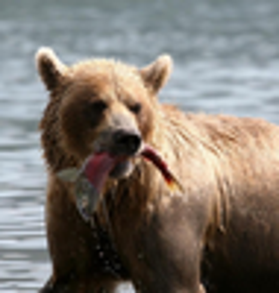
视觉工具实际返回图片 3
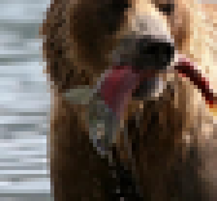
视觉工具实际返回图片 4
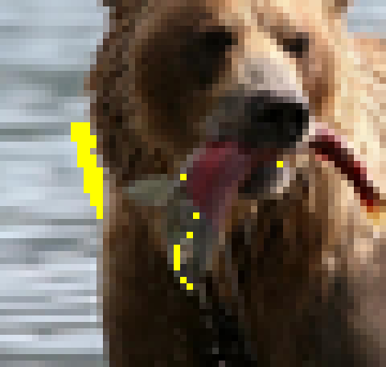
视觉工具实际返回图片 5
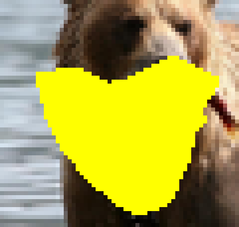
视觉工具实际返回图片 6
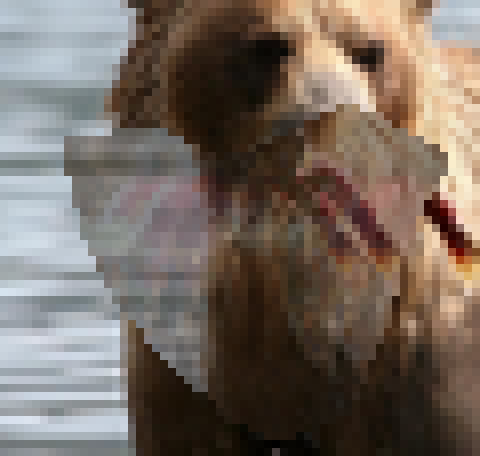
视觉工具实际返回图片 7

视觉工具实际返回图片 8
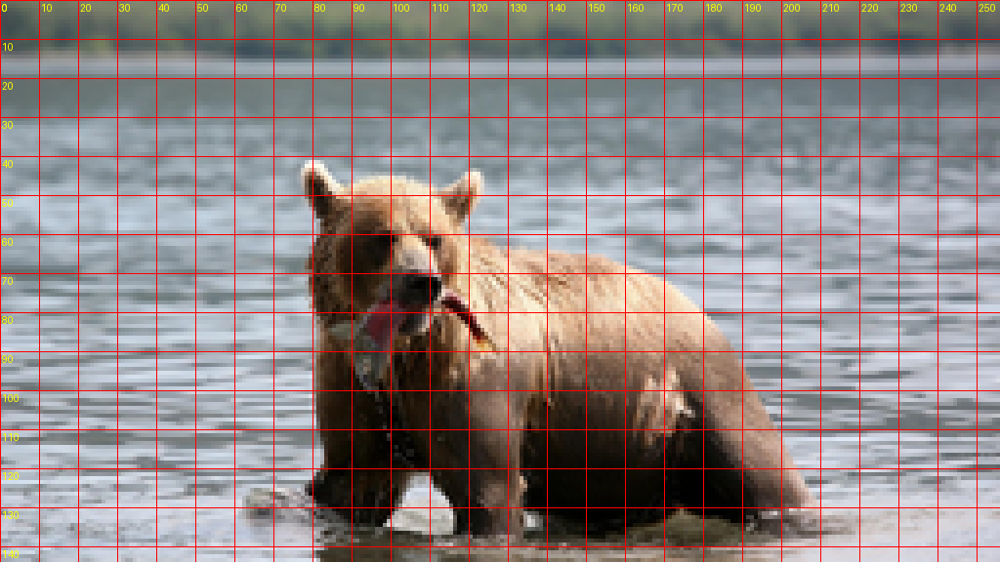
视觉工具实际返回图片 9
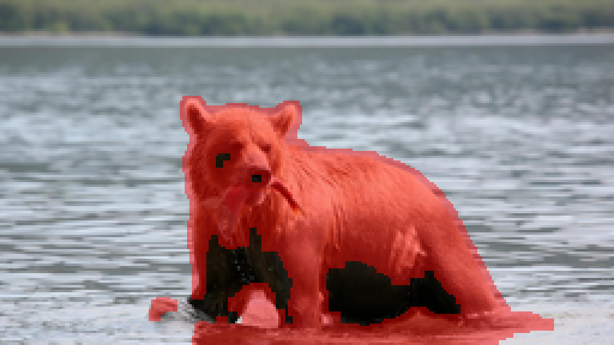
视觉工具实际返回图片 10
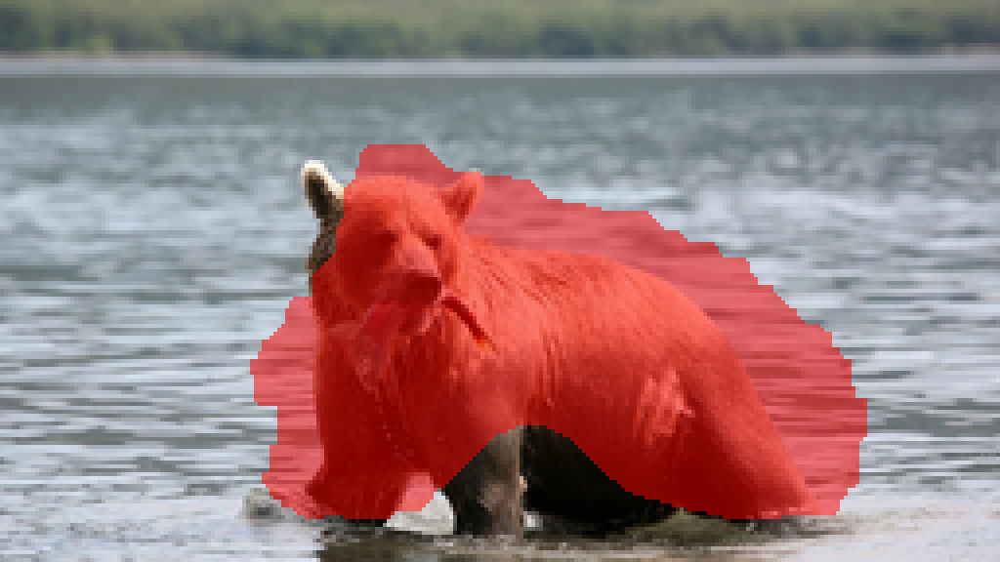
视觉工具实际返回图片 11
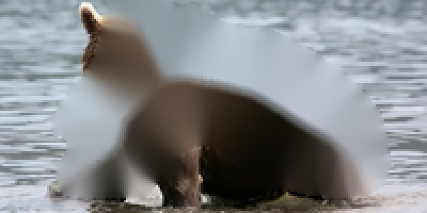
视觉工具实际返回图片 12
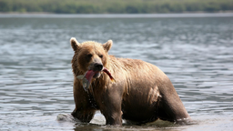
视觉工具实际返回图片 13
视觉工具实际返回图片 14
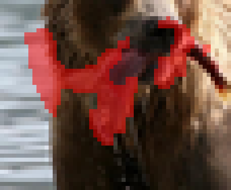
视觉工具实际返回图片 15
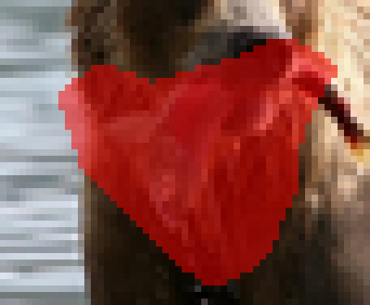
视觉工具实际返回图片 16
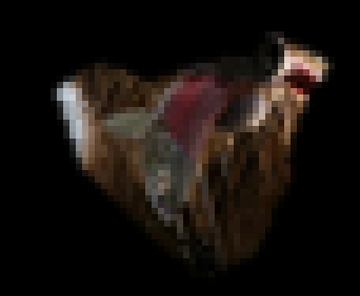
视觉工具实际返回图片 17
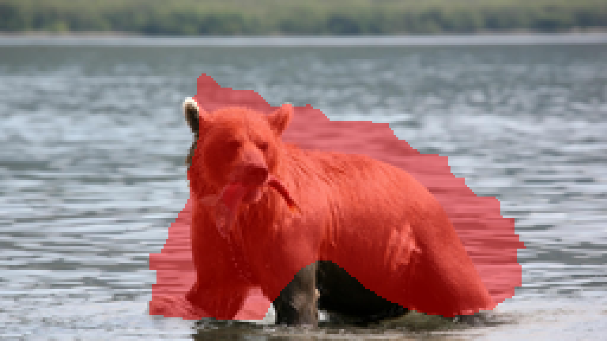
视觉工具实际返回图片 18
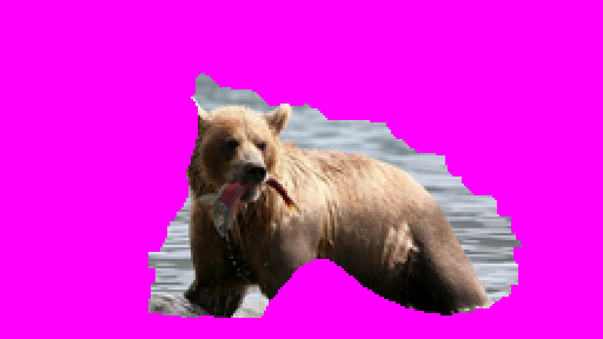
视觉工具实际返回图片 19

视觉工具实际返回图片 20

视觉工具实际返回图片 21
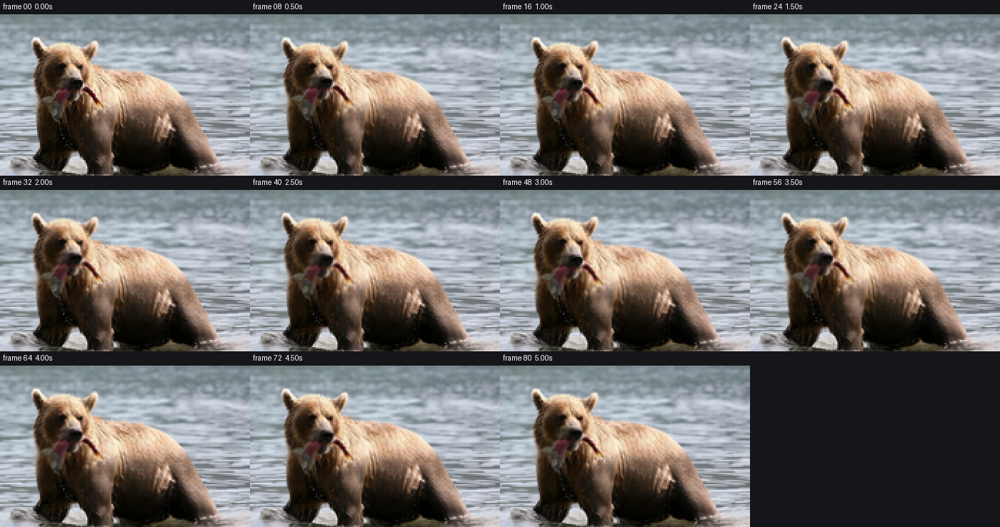
视觉工具实际返回图片 22
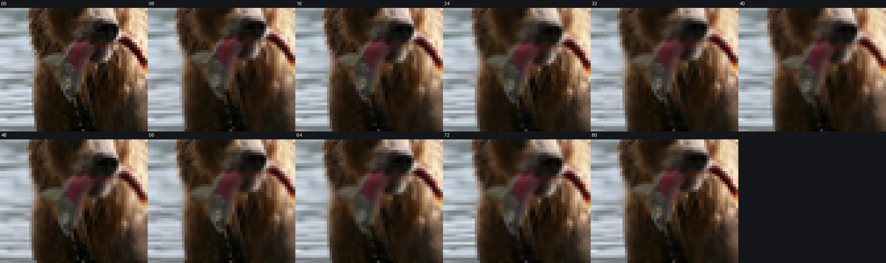
视觉工具实际返回图片 23
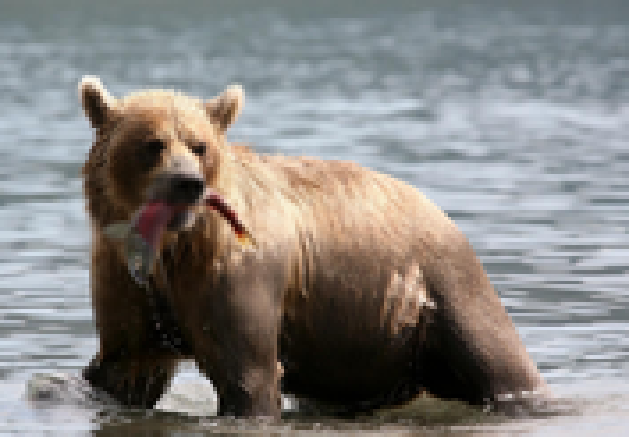
视觉工具实际返回图片 24
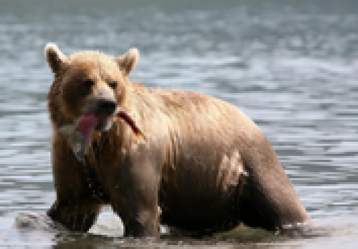
视觉工具实际返回图片 25
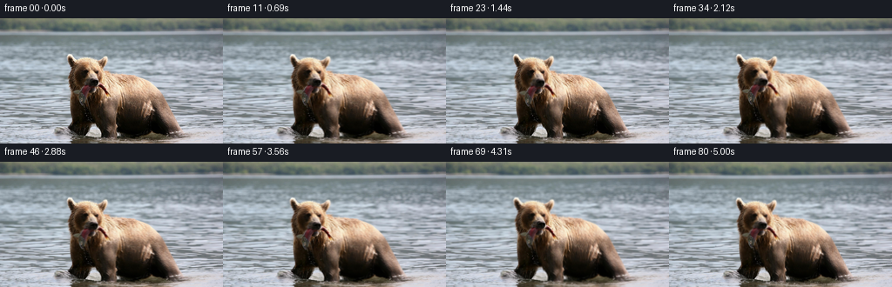
视觉工具实际返回图片 26
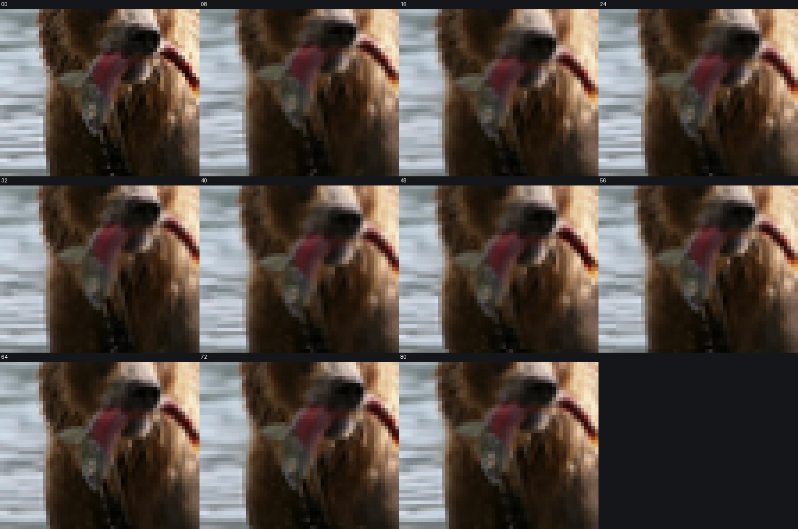
视觉工具实际返回图片 27
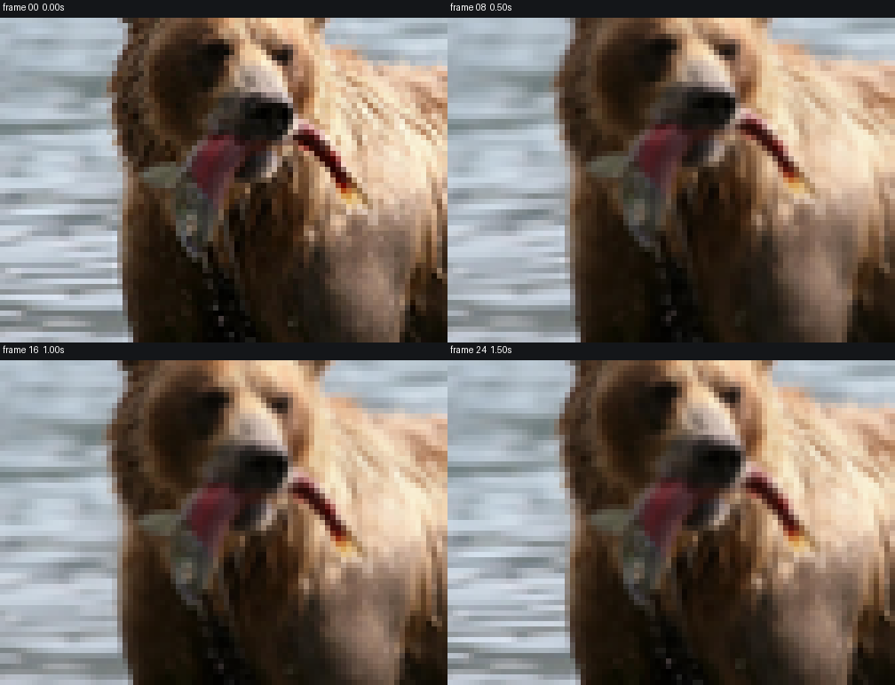
视觉工具实际返回图片 28

视觉工具实际返回图片 29
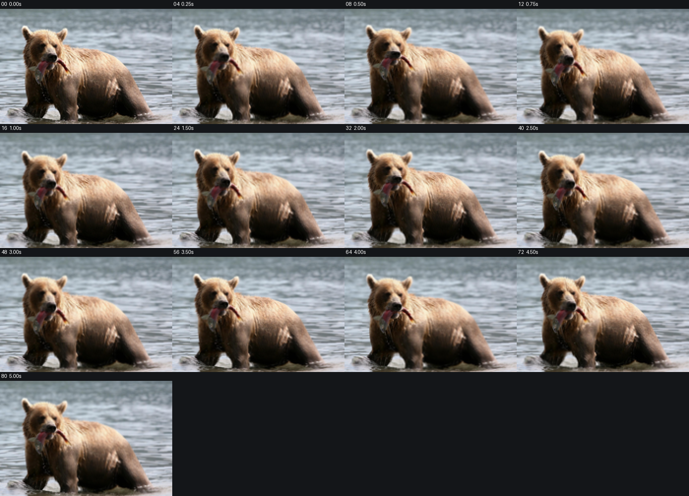
视觉工具实际返回图片 30
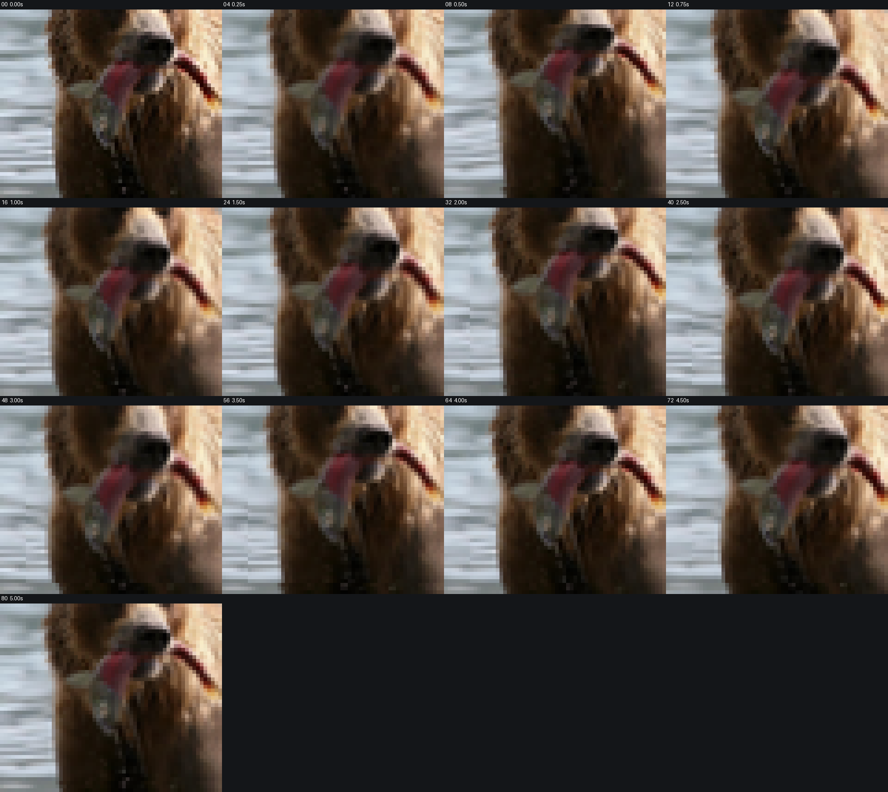
保存候选 4 份；完成命令 41 次；可验证图片返回 30 张。原始 API 响应与完整日志保留在本地。